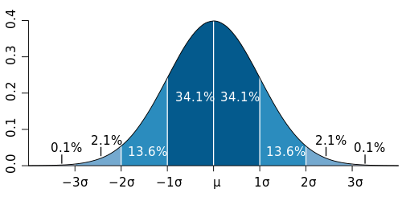
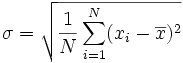

James Madison University, Spring 2018 Semester
Lab14: Computing basic statistics

Background
Standard deviation is a measure of the spread of a set of values around their mean. The higher the standard deviation, the more the values are scattered away from the mean. See the Wikipedia article for more details and examples.
IMPORTANT: The next programming exam will be similar in scope to this lab. It's important that you not only get the lab done, but that you thoroughly understand the underlying concepts. Be sure to ask questions.
Objectives
Read input data into an array.
Compute statistics using an array.
Process command-line arguments.
Part 1: Understand the algorithm
Given a set of N values (x1 through xn) with mean x, the standard deviation σ is:
In other words, you need to write two loops: one that computes the mean x, and another that computes the average of the squared differences (i.e., the variance). At the end, take the square root of the variance to determine the standard deviation.
-
Compute the mean and standard deviation for the following numbers by hand: {82, 88, 97, 80, 79, 92}
-
Make sure you get 86.3 for the mean and 6.6 for the standard deviation. Think about the algorithm you used.
Part 2: Creating an array from input values
-
Create two Java classes for today's lab: Main.java with a main method, and Stats.java without a main method. The main method will read a series of numbers from System.in, create an array containing those numbers, call the mean and standard deviation functions in the Stats class, and then report the results.
-
If the main method is given a command-line argument, that argument will specify the number of values to be read. If no command-line argument is passed, the program should read 25 values. Note that the argument
argsis an array of Strings. See the Integer.parseInt() documentation for converting a String to an int. -
Create an array of double values, using the size from the command-line argument (or 25 as a default, if no argument is provided).
-
Use a loop to read the input values from the keyboard (as doubles) and store them into the array. No prompt should be output before reading the values. The loop should terminate when the appropriate number of values has been read.
-
Once the array is built, you will pass it to methods in Stats.java. For now, simply print the contents of the array to make sure your program is working correctly. You may find the Arrays.toString method useful.
-
To test the program using the command-line argument for the number of values to read in, open a terminal window, navigate to your work folder, and enter:
java Main 10
This command will run the Main program passing{"10"}as the command-line arguments to the main method. If you run it with just java Main then the default of 25 values should be used.
Do not move on until you know the input is working, both with and without a command-line argument!
Part 3: Writing a method to calculate the mean
-
In the Stats.java file, create a static method called mean that will take an array of double values as its parameter, and then calculate and return the mean of those numbers.
-
The method should ensure that the array is not null and that it has more than 0 elements. If either of these conditions exists, the method should return Double.NaN (not a number).
-
Test your mean method from the Main.java program. The main method should output the return value as a single line, using the format "Mean: %.2f\n".
Part 4: Calculating the standard deviation
-
Add to Stats.java a method called stdDev that computes the standard deviation of a given array of double numbers.
-
Your stdDev method should call the mean method created in Part 3 above.
-
The method should ensure that the array is not null and that it has more than 0 elements. If either of those conditions exists, return Double.NaN (not a number).
-
Add to the Main program a single line of output following the mean output line. The format of the standard deviation line should be "StdDev: %.2f\n".
Part 5: More command-line tips and tricks
By now you are probably tired of typing in all the values during testing. Wouldn't it be nice to have a file that you could use for testing, so that you could set it up once and then use it repeatedly?
-
Download the file testData.txt into the folder containing your program. At the command-line, type the command:
java Main 20 < testData.txt
In other words, run Main using 20 for the command-line argument, and redirect input to use testData.txt instead of the normal System.in.
-
The redirect operator (<) is a feature of the operating system shell, which is the program that is reading and processing the commands that you enter in the terminal window. It's also possible to redirect the output of your program to a file, using the > symbol, as in:
java Main 20 < testData.txt > output.txt
-
You can do a lot more with the terminal than what we've seen in this course. For example, it's possible to write a simple loop that repeats the same command with different arguments:
for n in 5 10 12; do java Main $n < testData.txt; done
In other words, first run Main with 5, then with 10, then with 12. Try running this command in your terminal, and experiment with different arguments (separated by spaces).
Submit your Main.java and Stats.java files via Canvas by the end of the day.